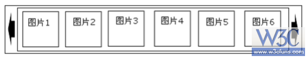
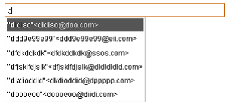
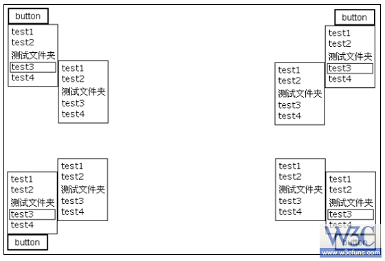

JavaScript面试题要求：以下题目必须从一至四题中，选出三道题，使用原生代码实现，不可使
用任何框架，第五题为选作题。
一、 在页面的固定区域内实现图片的展示
1.png
1. 每点击一次右箭头，图片区域向左滚动出一张图片，反之相同；
2. 当发现图片滚动到末尾时，响应的箭头变成不可点击状态；
3. 鼠标在图片区域内滑动滚轮，图片会随着鼠标滚轮的方向进行响应的滚动；
二、 用 js、html、css实现一个弹出提示控件：
1. 分别实现类似于系统的 alert、confirm、prompt对话框；
2. 对话框大小根据提示内容进行自适应（有一个最小宽高），默认出现在页面的水平垂直居中的位置；
3. 对话框可拖动；
4. 对话框中的事件模拟系统对话框的事件（例如：alert 对话框，点击确定按钮，对话框消失）；
5. 解决IE6被 select控件遮挡的问题；
三、 实现 input 输入框的自动匹配
2.png
1. 对 input框中输入的字符进行匹配，将匹配到的内容以菜单的形式展现在 input框的下方； 2. 只针对英文字符进行匹配，并且匹配到的内容在菜单中加粗；
3. 通过键盘上的上下箭头可以对菜单进行选择，按下回车后将选中的内容写入到 input框中；
四、 在页面上实现一个二级菜单控件
3.png
1. 这个控件可以绑定到页面上的任意一个元素，当点击页面元素出现菜单；
2. 菜单出现的方向根据所在页面的位置自动进行调整，例如：
3. 一级菜单中的元素，鼠标划过后，将会在相应的位置出现二级菜单，二级菜单中的元素
点击将会有事件响应
五、 实现一个所见即所得编辑器（选作）
需提供以下功能：
1. 字体加粗；
2. 文本左对齐、右对齐、居中；
3. 设置字体；
4. 设置字号；
5. 设置字体颜色；
6. 插入超链接；
7. 插入图片；
我的答案
1.http://gucong.co.cc/renren/thumbs.html
2.http://gucong.co.cc/renren/dialog.html
3.http://gucong.co.cc/renren/autocomplete.html
5.http://gucong.co.cc/renren/editor.html